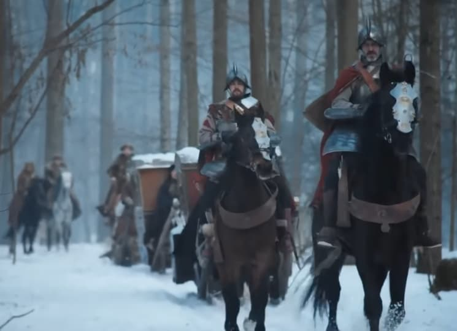

Информацию по любому населенному пункту Википедия начинает со слов - впервые упомянут в 1500-ом году в Новгородской писцовой книге.
Как проводилась перепись в столь отдаленное время я мог только фантазировать. Предсталялся некий дед, который плелся с посохом и сумой за плечами. Завидев людей выкрикивал:
- Чего у вас тут, православные?
- Живем мы тут, батюшка.
Нацарапал дед на бересте каракули и дальше лаптями зашаркал, со своей каргой.

Оказалось - отнюдь.
Иван III присоединил к Москве Новгородскую республику (1478), Тверское (1485) и Ярославское княжества, увеличив территорию государства в несколько раз.
Новый хозяин огромных владений задался вопросом - чем же он владеет? И где его налоги?
Полномочия переписчиков были чрезвычайными и диктаторскими. Писец имел право вызывать на допрос любого — от знатного землевладельца до последнего зависимого крестьянина и требовать объяснений. Если возникали сомнения в честности, проводился жесткий «обыск» и поголовный опрос соседей («сыск накрепко»).
Если обнаруживались «лишние» земли, которые помещик утаил от налогов, комиссия их изымала в пользу великого князя.
Записи писцов имели силу высшего закона. То, что писец вносил в итоговую «белую» книгу, становилось единственным юридическим документом, подтверждающим право владеть землей и крестьянами. Если деревни не было в книге — она считалась незаконной.
Местное население было обязано кормить писцов и содержать всю комиссию и их лошадей на протяжении недель, пока шел учет. За попытку обмануть писца, утаить двор или занизить площадь пашни виновным грозили огромные денежные штрафы, конфискация имущества, а в ряде случаев — и смертная казнь за «воровство» перед великим князем.
Ничего себе перепись!?
Аж, как от хлыста меж лопатками ошпарило!